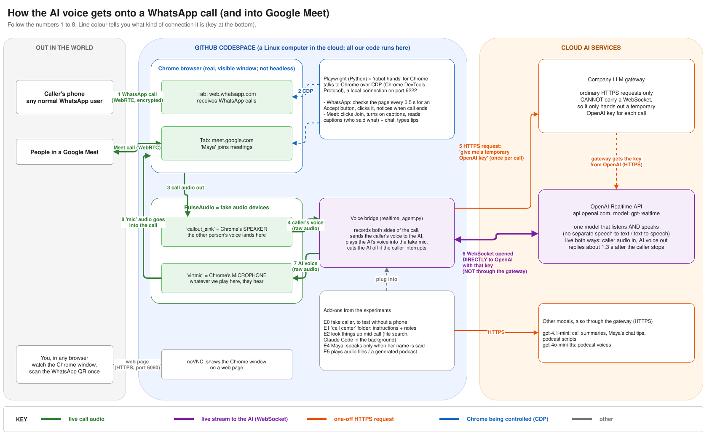

An AI voice on WhatsApp calls and Google Meet
Everything runs in one GitHub Codespace. A real Chrome browser joins the call, virtual audio devices act as its microphone and speaker, and a realtime voice model listens and talks through them. No WhatsApp Business account and no phone number provider are needed.
The whole system on one page
Three areas, left to right: the people on the call, our Codespace, and the cloud AI services. Follow the numbers. Line colours show the kind of connection. Open full size · draw.io source (open it in draw.io / diagrams.net to edit).


The 8 steps in plain words
- Someone calls our WhatsApp number from a normal phone. The call arrives in a real Chrome window running WhatsApp Web inside the Codespace (WebRTC, end-to-end encrypted; we never touch that traffic).
- Playwright spots the call and answers. It looks at the WhatsApp page every 0.5 s, the way a person would, for an "Accept" button, and clicks it. It talks to Chrome over CDP (Chrome DevTools Protocol), a local connection inside the Codespace.
- Chrome plays the call into a fake speaker. PulseAudio gives Chrome a pretend speaker (
callout_sink) and a pretend microphone (virtmic). - The voice bridge picks up the caller's voice from the fake speaker as raw audio, and records it.
- It asks the company LLM gateway for a temporary OpenAI key. This is one ordinary HTTPS request at the start of each call. The gateway can't carry a WebSocket, so this key is the only thing it provides.
- It opens a WebSocket directly to OpenAI (
wss://api.openai.com, modelgpt-realtime) using that key. This connection does not go through the gateway. The caller's audio streams up and the AI's voice streams back down, live, for the whole call. - The AI's voice goes into the fake microphone. If the caller starts talking over the AI, the bridge cuts the AI off.
- Chrome sends the fake-mic audio into the call, so the caller hears the AI. The reply starts about 1.3 s after the caller stops talking. When the call ends, both sides and a transcript are saved, and a summary is written by
gpt-4.1-minithrough the gateway (plain HTTPS).
Maya on Google Meet: what's different
- Same pipes: Chrome opens a Meet tab instead of WhatsApp, with the same fake mic and speaker and the same direct WebSocket to
gpt-realtime. - Joining: Playwright clicks Join and turns on captions. Meet refuses guests from a cloud machine, so Maya uses her own Google account, signed in once by hand.
- Only speaks when named: the model hears everything, but its auto-reply is switched off. Our code replies only when someone says "Maya, …", and stops her within about 0.2 s if someone talks over her.
- Knows who said what: Playwright reads Meet's captions (which carry speaker names) and the chat every 1.5 s, and passes them to the model as text.
- Chat tips: every few minutes
gpt-4.1-mini(via the gateway, HTTPS) suggests a short tip, and Playwright types it into the Meet chat.
What each experiment added
| # | What it adds | How it works | Models / protocol | Status |
|---|---|---|---|---|
| E0 | A fake caller, so we can test without a real phone call | Speaks scripted lines with TTS into the agent's input, records the reply, measures latency and barge-in | edge-tts; same realtime agent | Done |
| E1 | Call-center mode from a folder you edit | callcenter.py start --context DIR builds instructions from your files on every call; writes summary.md after the call |
gpt-realtime (call); gpt-4.1-mini over HTTPS (summary) | Done (sim) |
| E2 | "Hold on, let me check": looks things up mid-call | Model calls tools: search files (ripgrep), read a file, or ask a background agent (claude -p). Says a holding line while waiting |
Realtime function calling; Claude Code headless as a subprocess; gateway fallback | Done (sim) |
| E3 | Model comparison (speed, Hindi, cost) | Same E0 scripts against several voice backends | Planned: newer gpt-realtime, Gemini Live, HTTP-only fallback | Not started |
| E4 | Maya, a Google Meet participant | See "Maya on Google Meet" above | gpt-realtime; gpt-4.1-mini for chat tips | Real Meet tested |
| E5 | Plays audio on request: files or a generated podcast | A pausable player writes into the same virtual mic. It pauses when the caller speaks. Podcast scripts are written and voiced line by line | gpt-4.1-mini (script), gpt-4o-mini-tts (two voices) | Done (sim) |
| E6 | One-command setup for demos | make demo, make doctor (health check), auto-install on container rebuild; Windows notes (WhatsApp Desktop + VB-Cable) |
n/a | Done Windows untested |
Details and numbers for each experiment: experiments/<ID>/RESULTS.md in the
repository.